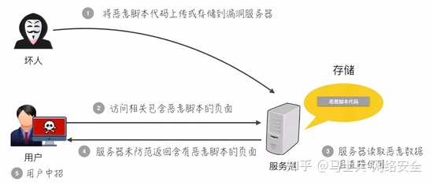
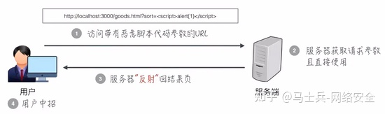
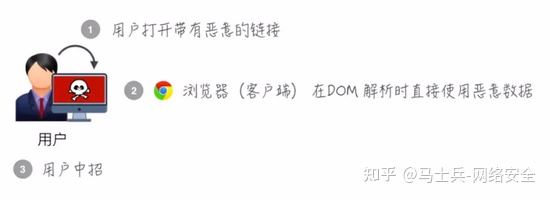

在 Web 安全领域中，XSS 和 CSRF 是最常见的攻击方式。本文将会简单介绍 XSS 的攻防问题。
XSS 攻击
什么是 XSS
Cross-Site Scripting（跨站脚本攻击）简称 XSS，是一种代码注入攻击。
攻击者通过在目标网站上注入恶意脚本，使之在用户的浏览器上运行。利用这些恶意脚本，攻击者可获取用户的敏感信息如 Cookie、SessionID 等，进而危害数据安全。
为了和 CSS 区分，这里把攻击的第一个字母改成了 X，于是叫做 XSS。
XSS 的本质是：恶意代码未经过滤，与网站正常的代码混在一起；浏览器无法分辨哪些脚本是可信的，导致恶意脚本被执行。
用户是通过哪种方法“注入”恶意脚本的呢？
- 来自用户的 UGC 信息
- 来自第三方的链接
- URL 参数
- POST 参数
- Referer （可能来自不可信的来源）
- Cookie （可能来自其他子域注入）
XSS 分类
根据攻击的来源，XSS 攻击可分为存储型、反射型和 DOM 型三种。
| 类型 | 存储区 | 插入点 |
|---|---|---|
| 存储型 XSS | 后端数据库 | HTML |
| 反射型 XSS | URL | HTML |
| DOM 型 XSS | 后端数据库/前端存储/URL | 前端 JavaScript |
- 存储区：恶意代码存放的位置。
- 插入点：由谁取得恶意代码，并插入到网页上。
存储型 XSS

存储型 XSS 的攻击步骤：- 攻击者将恶意代码提交到目标网站的数据库中。
- 用户打开目标网站时，网站服务端将恶意代码从数据库取出，拼接在 HTML 中返回给浏览器。
- 用户浏览器接收到响应后解析执行，混在其中的恶意代码也被执行。
- 恶意代码窃取用户数据并发送到攻击者的网站，或者冒充用户的行为，调用目标网站接口执行攻击者指定的操作。
这种攻击常见于带有用户保存数据的网站功能，如论坛发帖、商品评论、用户私信等。
反射型 XSS
反射型 XSS 的原理：攻击者诱导用户访问一个带有恶意代码的 URL 后，服务器端接收数据后处理，然后把带有恶意代码的数据发送到浏览器端，浏览器端解析这段带有 XSS 代码的数据后当做脚本执行，最终完成 XSS 攻击。

反射型 XSS 的攻击步骤：- 攻击者构造出特殊的 URL，其中包含恶意代码。
- 用户打开带有恶意代码的 URL 时，网站服务端将恶意代码从 URL 中取出，拼接在 HTML 中返回给浏览器。
- 用户浏览器接收到响应后解析执行，混在其中的恶意代码也被执行。
- 恶意代码窃取用户数据并发送到攻击者的网站，或者冒充用户的行为，调用目标网站接口执行攻击者指定的操作。
- 存储型 XSS 的恶意代码存在服务器上，反射型 XSS 的恶意代码存在 URL 里。
- 存储型 XSS 攻击时恶意脚本会存储在目标服务器上。
反射型 XSS 漏洞常见于通过 URL 传递参数的功能，如网站搜索、跳转等。
由于需要用户主动打开恶意的 URL 才能生效，攻击者往往会结合多种手段诱导用户点击。
POST 的内容也可以触发反射型 XSS，只不过其触发条件比较苛刻（需要构造表单提交页面，并引导用户点击），所以非常少见。
DOM 型 XSS
DOM 型 XSS 的原理：DOM 型 XSS 形成原因是通过修改页面的 DOM 节点形成的 XSS。 DOM 型 XSS 攻击中，取出和执行恶意代码都由浏览器端完成，属于前端自身的安全漏洞。

DOM 型 XSS 的攻击步骤：- 攻击者构造出特殊的 URL，其中包含恶意代码。
- 用户打开带有恶意代码的 URL。
- 用户浏览器接收到响应后解析执行，前端 JavaScript 取出 URL 中的恶意代码并执行。
- 恶意代码窃取用户数据并发送到攻击者的网站，或者冒充用户的行为，调用目标网站接口执行攻击者指定的操作。
DOM 型 XSS 攻击中，取出和执行恶意代码由浏览器端完成，属于前端 JavaScript 自身的安全漏洞，而其他两种 XSS 都属于服务端的安全漏洞。
XSS 攻击的预防
现在主流的浏览器内置了防范 XSS 的措施，例如 CSP。但对于开发者来说，也应该寻找可靠的解决方案来防止 XSS 攻击。
通过前面的介绍可以得知，XSS 攻击有两大要素：
- 攻击者提交恶意代码。
- 浏览器执行恶意代码。
输入过滤
在用户提交时，由前端过滤输入，然后提交到后端。这样做是否可行呢？
答案是不可行。一旦攻击者绕过前端过滤，直接构造请求，就可以提交恶意代码了。
那么，换一个过滤时机：后端在写入数据库前，对输入进行过滤，然后把“安全的”内容，返回给前端。这样是否可行呢？
例子，一个正常的用户输入了
5 < 7这个内容，在写入数据库前，被转义，变成了5 < 7。
问题是：在提交阶段，我们并不确定内容要输出到哪里：
- 用户的输入内容可能同时提供给前端和客户端，而一旦经过了
escapeHTML()，客户端显示的内容就变成了乱码(5 < 7)。 - 在前端中，不同的位置所需的编码也不同。
- 当
5 < 7作为 HTML 拼接页面时，可以正常显示：<div title="comment">5 < 7</div> - 当
5 < 7通过 Ajax 返回，然后赋值给 JavaScript 的变量时，前端得到的字符串就是转义后的字符。这个内容不能直接用于 Vue 等模板的展示，也不能直接用于内容长度计算。不能用于标题、alert 等。
- 当
所以，输入侧过滤能够在某些情况下解决特定的 XSS 问题，但会引入很大的不确定性和乱码问题。
而在一些前端框架中，都会有一份 decodingMap， 用于对用户输入所包含的特殊字符或标签进行编码或过滤，如 <，>，script，防止 XSS 攻击：
// vuejs 中的 decodingMap
// 在 vuejs 中，如果输入带 script 标签的内容，会直接过滤掉
const decodingMap = {
'<': '<',
'>': '>',
'"': '"',
'&': '&',
' ': '\n'
}
- 防止 HTML 中出现注入。
- 防止 JavaScript 执行时，执行恶意代码。
预防存储型和反射型 XSS 攻击
存储型和反射型 XSS 都是在服务端取出恶意代码后，插入到响应 HTML 里的，攻击者刻意编写的“数据”被内嵌到“代码”中，被浏览器所执行。
预防这两种漏洞，有两种常见做法：
- 改成纯前端渲染，把代码和数据分隔开。
- 对 HTML 做充分转义。
纯前端渲染
纯前端渲染的过程：
- 浏览器先加载一个静态 HTML，此 HTML 中不包含任何跟业务相关的数据。
- 然后浏览器执行 HTML 中的 JavaScript。
- JavaScript 通过 Ajax 加载业务数据，调用 DOM API 更新到页面上。
在纯前端渲染中，我们会明确的告诉浏览器：下面要设置的内容是文本（.innerText），还是属性（.setAttribute），还是样式（.style）等等。浏览器不会被轻易的被欺骗，执行预期外的代码了。
但纯前端渲染还需注意避免 DOM 型 XSS 漏洞（例如 onload 事件和 href 中的 javascript:xxx 等，请参考下文”预防 DOM 型 XSS 攻击“部分）。
在很多内部、管理系统中，采用纯前端渲染是非常合适的。但对于性能要求高，或有 SEO 需求的页面，我们仍然要面对拼接 HTML 的问题。
转义 HTML
如果拼接 HTML 是必要的，就需要采用合适的转义库，对 HTML 模板各处插入点进行充分的转义。
常用的模板引擎，如 doT.js、ejs、FreeMarker 等，对于 HTML 转义通常只有一个规则，就是把 & < > “ ‘ / 这几个字符转义掉，确实能起到一定的 XSS 防护作用，但并不完善：
| XSS 安全漏洞 | 简单转义是否有防护作用 |
|---|---|
| HTML 标签文字内容 | 有 |
| HTML 属性值 | 有 |
| CSS 内联样式 | 无 |
| 内联 JavaScript | 无 |
| 内联 JSON | 无 |
| 跳转链接 | 无 |
所以要完善 XSS 防护措施，我们要使用更完善更细致的转义策略。
例如 Java 工程里，常用的转义库为 org.owasp.encoder。
预防 DOM 型 XSS 攻击
DOM 型 XSS 攻击，实际上就是网站前端 JavaScript 代码本身不够严谨，把不可信的数据当作代码执行了。
在使用 .innerHTML、.outerHTML、document.write() 时要特别小心，不要把不可信的数据作为 HTML 插到页面上，而应尽量使用 .textContent、.setAttribute() 等。
如果用 Vue/React 技术栈，并且不使用v-html/dangerouslySetInnerHTML 功能，就在前端 render 阶段避免 innerHTML、outerHTML 的 XSS 隐患。
DOM 中的内联事件监听器，如 location、onclick、onerror、onload、onmouseover 等，<a> 标签的 href属性，JavaScript 的 eval()、setTimeout()、setInterval() 等，都能把字符串作为代码运行。如果不可信的数据拼接到字符串中传递给这些 API，很容易产生安全隐患，请务必避免。
<!-- 链接内包含恶意代码 -->
<a href="UNTRUSTED">1</a>
<script>
// setTimeout()/setInterval() 中调用恶意代码
setTimeout("UNTRUSTED")
setInterval("UNTRUSTED")
// location 调用恶意代码
location.href = 'UNTRUSTED'
// eval() 中调用恶意代码
eval("UNTRUSTED")
</script>
如果项目中有用到这些的话，一定要避免在字符串中拼接不可信数据。
其他 XSS 防范措施
Content Security Policy
严格的 CSP 在 XSS 的防范中可以起到以下的作用：
- 禁止加载外域代码，防止复杂的攻击逻辑。
- 禁止外域提交，网站被攻击后，用户的数据不会泄露到外域。
- 禁止内联脚本执行（规则较严格，目前发现 GitHub 使用）。
- 禁止未授权的脚本执行（新特性，Google Map 移动版在使用）。
- 合理使用上报可以及时发现 XSS，利于尽快修复问题。
输入内容长度控制
对于不受信任的输入，都应该限定一个合理的长度。虽然无法完全防止 XSS 发生，但可以增加 XSS 攻击的难度。
其他安全措施
- HTTP-only Cookie: 禁止 JavaScript 读取某些敏感 Cookie，攻击者完成 XSS 注入后也无法窃取此 Cookie。
- 验证码：防止脚本冒充用户提交危险操作。
XSS 的检测
- 使用通用 XSS 攻击字符串手动检测 XSS 漏洞。
- 使用扫描工具自动检测 XSS 漏洞。
XSS 攻击的总结
减少漏洞的产生：
- 利用模板引擎 开启模板引擎自带的 HTML 转义功能。
-
避免内联事件 尽量不要使用
onLoad="onload('')"、onClick="go('')"这种拼接内联事件的写法。在 JavaScript 中通过.addEventlistener()事件绑定会更安全。 -
避免拼接 HTML 前端采用拼接 HTML 的方法比较危险，如果框架允许，使用
createElement、setAttribute之类的方法实现。或者采用比较成熟的渲染框架，如 Vue/React 等。 - 时刻保持警惕 在插入位置为 DOM 属性、链接等位置时，要打起精神，严加防范。
- 增加攻击难度，降低攻击后果 通过 CSP、输入长度配置、接口安全措施等方法，增加攻击的难度，降低攻击的后果。
- 主动检测和发现 可使用 XSS 攻击字符串和自动扫描工具寻找潜在的 XSS 漏洞。